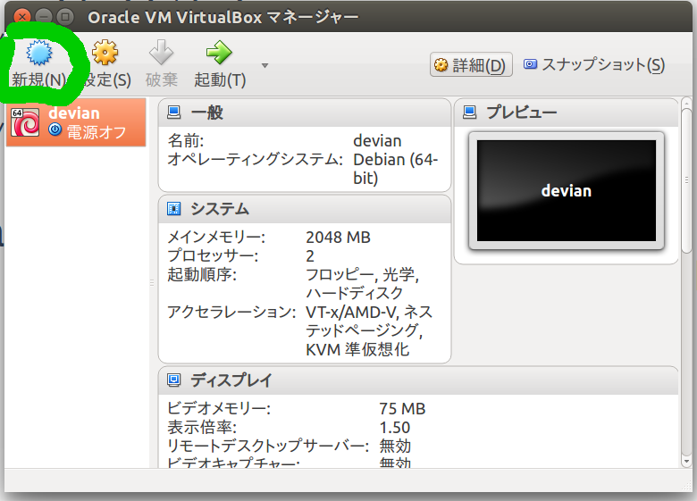

仮想マシンを構築 1.左上の新規(N) アイコンをクリック  2.名前とオペレーティングシステムで名前、タイプ(linux)、使用するOS(debian)を選択し次へ 3.メモリーのサイズを選択する。768MB以上でOK 4.仮想ハードディスクを作成するにチェックを入れて「作成」をクリック 5.そのままVDIを選択し次へ(他の仮想化ソフトウェアで使用しないので) 6.物理ハードディスクにあるストレージで可変か固定かは好みで選択 7.ファイルの場所とサイズは自分の好みでok(そのまま作成をクリックでも大丈夫) これで仮想マシンの構築は完了です。 前へ 次は仮想マシンのネットワーク設定へ